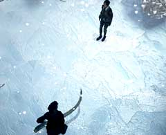

| 概要 | 地図 |
| 淡いヒント集 | ヒント集 | 的確なヒント集 |
| 攻略最短ルート |
| 場所選択に戻る |
雪山
| 丘の前にあるスノーモービルを調べ、「毛布」を入手 木彫りの鳥の口に対し「毛布」を詰める  雪原にいる弟に話しかける (「ハンス」以外の選択肢を全て選ぶと、「精霊」という選択肢が出てくるので、これを2回選ぶ) (弟が帰っていく) スノーモービルがあった位置に「カンジキ」があるので入手  凍った坂を上る (兄登場) オスカーに電話をする 象牙を積んだソリを調べる 「象牙のナイフ」を入手し、固定してあるロープを着る | << 前へ | |
| 場所選択に戻る |
| 概要 | 地図 |
| 淡いヒント集 | ヒント集 | 的確なヒント集 |
| 攻略最短ルート |
Syberia II
| 目次へ戻る | ページの上部へ |